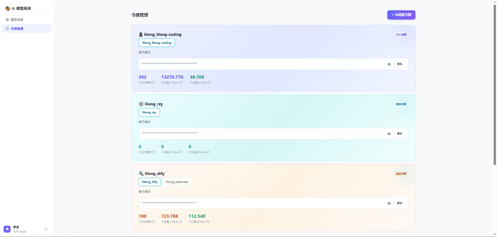
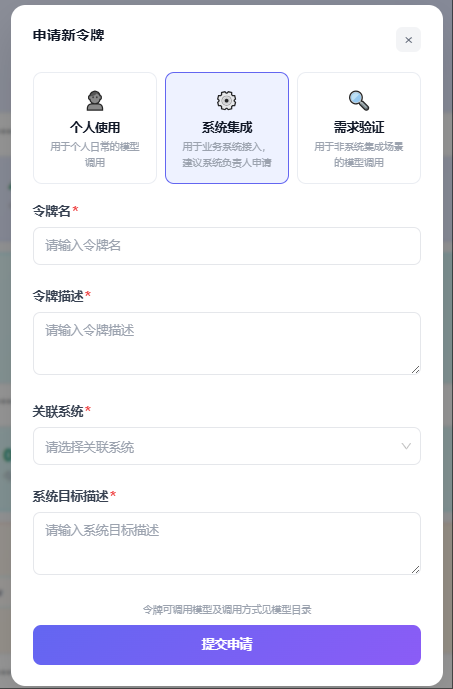
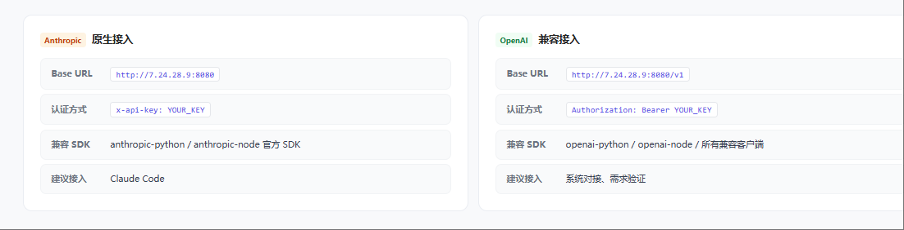
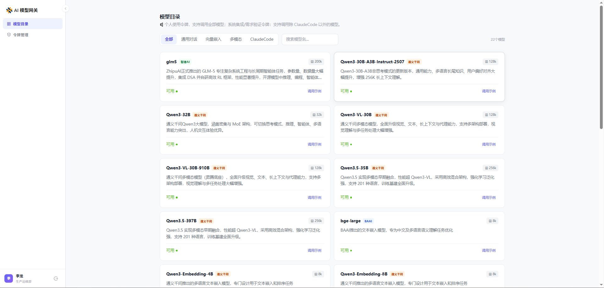

API Key 申请指南
一步步教你通过公司内网申请模型API Key，开启AI工具之旅
申请流程
按照以下步骤在公司内网平台申请API Key，整个过程约5分钟。
-
访问 AI Gateway 平台
使用域账号（OA账号）访问公司内网 AI Gateway 地址：
http://aigateway.sccba.org/ -
进入令牌管理页面
登录后点击导航栏中的「令牌管理」，查看已有令牌或申请新令牌。

-
申请新令牌
点击「申请新令牌」按钮，在表单中填写：
- 令牌类型：个人办公使用则选择「个人使用」
- 令牌名称：起一个辨识度高的名字（如"张三-ClaudeCode"）
- 令牌描述：简要说明用途

-
复制并保存令牌
提交申请后系统生成令牌字符串。请立即点击复制按钮并妥善保存，关闭弹窗后将无法再次查看完整令牌。
重要提醒 令牌等同于账号密码，请勿在截图中泄露、不要通过即时通讯工具明文传输、不要提交到代码仓库中。 -
复制 API 接口 URL
平台提供 Anthropic 和 OpenAI 两种兼容接口，按需使用：
- Anthropic 接口：
http://7.24.28.9:8080 - OpenAI 接口：
http://7.24.28.9:8080/v1

- Anthropic 接口：
-
选择模型
点击「模型目录」，在模型列表中选择需要的模型。其中以 anthropic 开头的是兼容 Anthropic 接口的模型，直接复制模型名称即可使用。

-
配置到工具中使用
拿到令牌后，根据你要使用的工具进行配置：
Hermes-Agent
在 Hermes-Agent 平台设置中填入 API Key 和接口 URL 即可使用，通常平台会自动关联。
Claude Code
设置环境变量
ANTHROPIC_API_KEY=你的令牌和ANTHROPIC_BASE_URL=http://7.24.28.9:8080，启动 Claude Code 即可使用。
API Key 管理
申请后可以在平台随时管理你的API Key。
查看列表
在API Key管理页面可以查看你所有已申请的Key及其状态。
重新生成
Key 丢失后可重新生成新 Key（旧 Key 将立即失效）。注意 API Key 长期有效，无需续期。
吊销
如果Key泄露或不再使用，应立即在平台上吊销/删除该Key。
AI 技术支持
在使用 AI 工具或申请 API Key 过程中如有疑问，请联系以下技术支持人员。
李龙
lilong
Claude Code、Hermes-Agent 技术支持，API Key 申请与配置问题协助。
司佳宇
sijy
AI 工具使用指导、模型相关问题、培训咨询与技术支持。
常见问题
没有限制。一个API Key可以用于所有支持该认证的服务，包括 Hermes-Agent、Claude Code 以及其他兼容接口的工具。
有频率限制：每个API Key一分钟内最多8次请求。建议合理控制调用频率，避免触发限流。
不会。API Key长期有效，无需续期操作。
回到申请Key的「令牌管理」页面，在已有令牌列表中可以重新复制Key。
需要审批。提交申请后等待管理员审批通过即可使用。如果长时间未审批，请联系信息技术部处理。